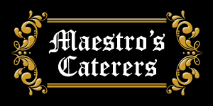
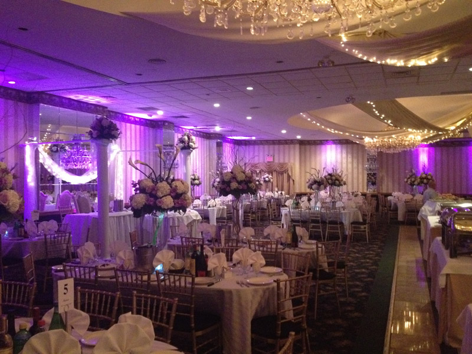
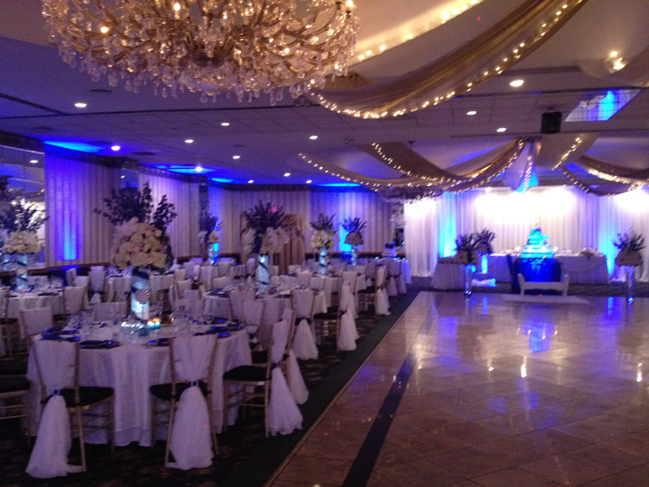
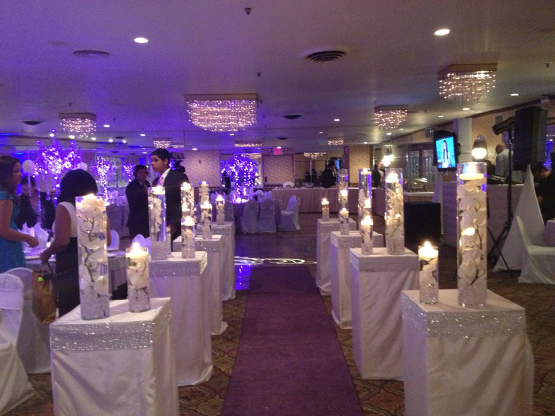
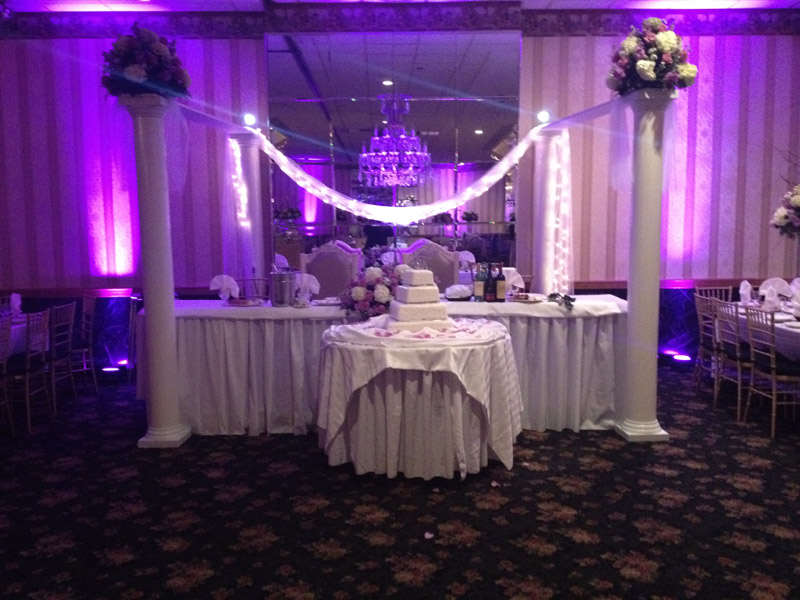

Our 10th Anniversary Banquet will be taking place on June 8th, from 8pm - 2am. There will be a 12 Station Buffet, Entertainment, along with an Open Bar for the entirety of the event. We would like to celebrate this milestone with the people that made our long lasting history possible, and hope that you can join us.
A Message From Our Founders The Badachu Chapter of Lambda Sigma Upsilon Latino Fraternity, Inc. was founded on May 1st, 2008 by eight undergraduate men from four different college campuses in New York City.
Our dedication to our own brotherhood, coupled with the amazing support of our brothers from different chapters and the fellowship created with other Fraternities and Sororities, has shaped us into the individuals we have grown to be. Today, the Badachu Chapter consists of 32 men of diverse backgrounds ranging from young undergraduate men to working professionals, husbands and fathers.
Our City, Our Campus.
Establishing and maintaining a chapter in New York City has proven to be a day to day challenge that each of our brothers has helped overcome. From the early days of our establishment to this very day, the brothers of the Badachu Chapter have had to come together from the perimeters of the five boroughs for meetings, events and service to our communities. “Our City, Our Campus” is not just the theme we’ve chosen for this 10th Anniversary celebration, it has been the fabric of our success since the very beginning.Our dedication to our own brotherhood, coupled with the amazing support of our brothers from different chapters and the fellowship created with other Fraternities and Sororities, has shaped us into the individuals we have grown to be. Today, the Badachu Chapter consists of 32 men of diverse backgrounds ranging from young undergraduate men to working professionals, husbands and fathers.
Join Us In Celebration
Thank you to each and every one of you for contributing to our development, our success, and for helping us in giving back to our city over the last 10 years. We are excited to have our family, friends, brothers, and fellow Greeks join us in celebration. Pa'Lante!    